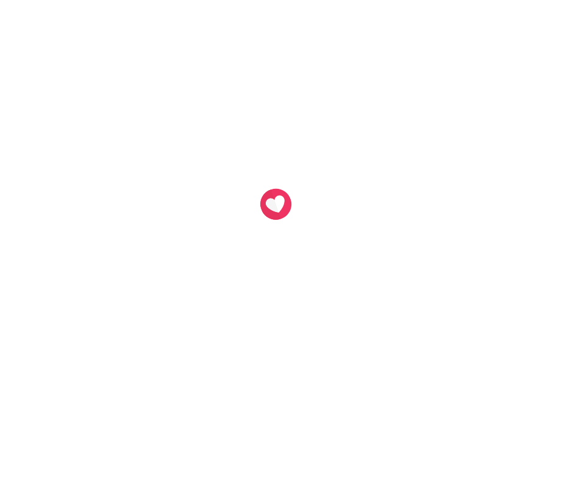
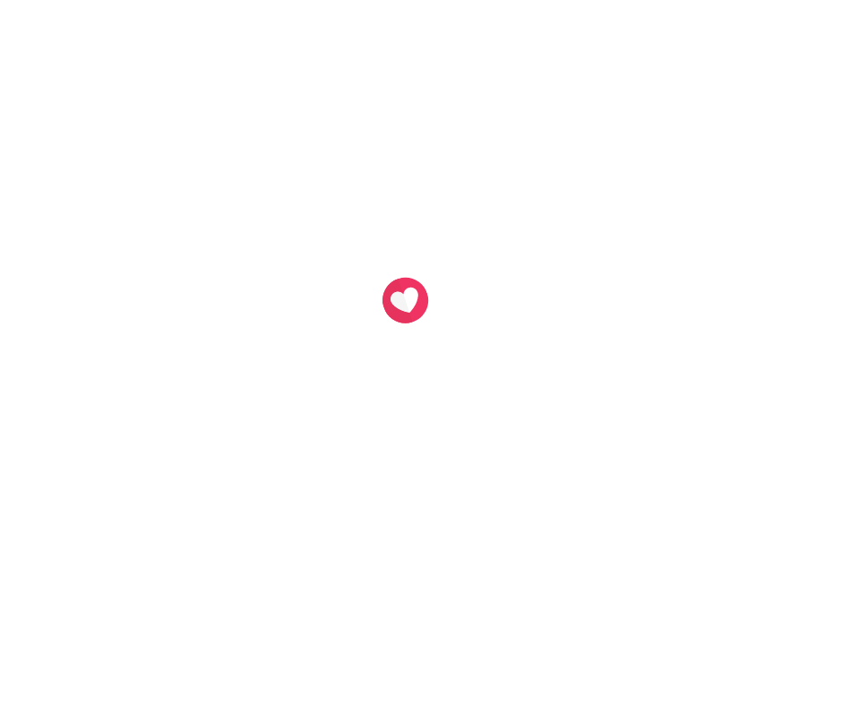

o amor que você procura está aqui.
Ter um animalzinho de estimação é ter uma amizade verdadeira e leal. Adotar um animal é adotar um amigo!
Por que adotar?
Porque, nesse exato momento, existem milhares de gatinhos esperando um humano para chamar de seu. E não há recompensa maior do que vê-los se tornando aquela coisinha alegre e saudável depois de uma boa dose de cuidado e carinho.
Quero adotar
Decidiu adotar e já escolheu seu bichinho? Agora falta pouco para encontrá-lo, basta seguir o passo a passo abaixo:
Preencha o formulário de interesse de
Aguarde o retorno da equipe responsável que é feito em até 7 dias;
Realize entrevistas virtuais e receba informações sobre a adoção e vídeos do seu/sua novo (a) amigo (a);
Em caso de sucesso na adoção, aguarde para receber o animal em sua residência, é necessário ter alguém maior de 18 anos no local.
 
